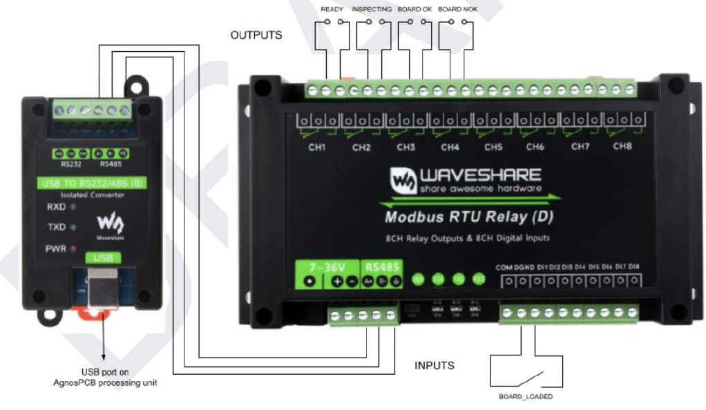
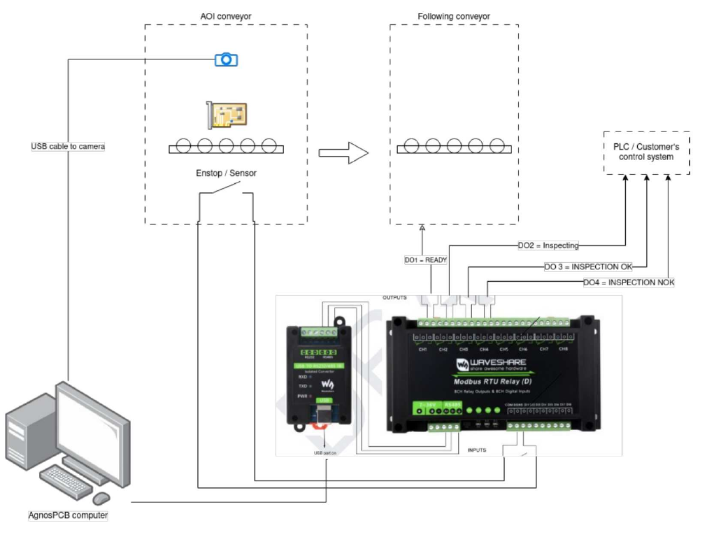

Conveyor integration (INLINE mode)¶
This guide explains how to integrate the AgnosPCB AI 4050 into an automated production line, so the AOI receives boards from a conveyor, inspects them without operator intervention and returns a PASS/FAIL result to the line controller.
The integration has two parts:
- The MODBUS module, which connects the AOI to the conveyor and to the line controller (PLC).
- The INLINE mode of the inspection software, which drives the unattended workflow.
Read before starting
Line integration involves electrical work on both the AOI and the conveyor controller. All wiring must be done with both systems powered off and by personnel qualified to work on the line control cabinet.
Before you begin¶
Check that you have the following:
- An AI 4050 unit already unboxed, assembled and working in standalone mode. If you have not reached that point yet, complete the unboxing guide and the connection guide first.
- A REFERENCE image already captured and validated for every product the line will run. INLINE mode inspects against existing REFERENCES — it cannot create them.
- The MODBUS module supplied by AgnosPCB for your unit.
- Access to the line controller (PLC) programming environment.
Licensing
INLINE mode and the JSON report output are licensed features. Confirm with support@agnospcb.com that your account profile has them enabled before commissioning the line — the options will not take effect otherwise.
1. Installing the MODBUS module¶

The module provides 8 relay outputs and 8 digital inputs, of which the integration uses one input and four outputs. It connects to a USB port of the AgnosPCB processing unit through the isolated USB to RS232/485 converter, as shown in the diagram above.
Inputs¶
The input has to be connected to an endstop switch, or to any sensor that detects that the PCBA is in place and ready to be inspected.
| Input | Signal | Function |
|---|---|---|
| DI1 | BOARD_LOADED |
Triggers an inspection, provided that the inspection platform is ready. |
Outputs¶
The outputs communicate the inspection status to the rest of the assembly line: to the next conveyor and to the PLC or control system of the line.
| Output | Terminal | Signal | Active when |
|---|---|---|---|
| DO1 | CH1 | READY |
The inspection platform is ready to start an inspection. |
| DO2 | CH2 | INSPECTING |
The inspection platform is performing an inspection. |
| DO3 | CH3 | BOARD OK |
The inspection has completed and the inspected board is OK. |
| DO4 | CH4 | BOARD NOK |
The inspection has completed and a fault has been detected on the board. |
When READY is off
DO1 is not active during the initialization of the system, while a processing task is ongoing, or when the application is not in the main window — for example while the settings menu or the reference mosaic is open.
General connection¶
The following diagram shows how all the elements involved are connected in a typical installation:

Four groups of equipment take part in the integration:
- The AOI conveyor, which carries the board into the inspection area and holds the camera and the position sensor.
- The AgnosPCB computer, which runs the inspection software.
- The MODBUS module together with its USB to RS-485 converter, which translates between the software and the electrical signals of the line.
- The line equipment: the conveyor that follows the AOI, and the PLC or control system of the customer.
The connections between them are the following:
| From | To | Connection | Purpose |
|---|---|---|---|
| Camera of the AOI conveyor | AgnosPCB computer | USB | Captures the images of the board. |
| AgnosPCB computer | USB to RS232/485 converter | USB | Carries the MODBUS communication out of the computer. |
| USB to RS232/485 converter | MODBUS module | RS-485 (A+ / B−) | Links the converter with the relay module. |
| Endstop / sensor of the AOI conveyor | MODBUS module input DI1 | Digital input | Signals that the board is in place, which triggers the inspection. |
| MODBUS module output DO1 | Following conveyor | Relay contact | Tells the next conveyor that the AOI is ready to receive a board. |
| MODBUS module outputs DO2, DO3 and DO4 | PLC / customer's control system | Relay contacts | Report the progress and the result of the inspection. |
Power supply
Besides these connections, the MODBUS module needs to be powered through its 7~36 V input, which is not represented in the diagram.
2. Configuring the inspection software¶
Once the module is installed and communicating, prepare the software for unattended operation. All the options below are in the Settings window; see the settings menu for the full reference.
2.1 Enable INLINE mode¶
Open Settings → Workflow and enable INLINE Mode (Conveyor).

This switches the client from the manual, keyboard-driven workflow to the API-driven workflow used on a line: the inspection is triggered by the line controller instead of by the operator pressing S.
2.2 Recommended companion settings¶
These options are not mandatory, but on an unattended line they are what makes the difference between a clean integration and a stalled conveyor:
| Setting | Location | Recommended value | Why |
|---|---|---|---|
| Operator mode | Workflow | Enabled | Hides reference capture and prevents an operator from altering the REFERENCE or sensitivity mid-shift. Protect it with a settings password (see the settings menu). |
| Mandatory errors review | Workflow | Disabled | If enabled, the software waits for a human to review every fault before allowing the next inspection — this will block the line. |
| Show errors popup | Workflow | Disabled | Prevents a modal dialog from waiting for input during automatic operation. |
| Show references mosaic | Workflow | Disabled | Avoids a popup after image capture. |
| Auto report OK / NOK | Reports | Both enabled | Generates the PDF for every board without operator action, so the line produces a complete traceability record. |
| Create JSON report | Reports | Enabled | Machine-readable result for your MES/SCADA. Requires a license. |
| Use barcodes | Workflow | Enabled | Lets the AOI load the correct REFERENCE automatically from the board barcode, so mixed-product lines do not need a manual product change. Requires a license. See barcode reader. |
Note
With Auto report enabled, every fault is written to the PDF with the "unknown" label, because no operator classifies them. This is expected on a line — the classification is done later, offline, from the stored reports.
2.3 Where the results are written¶
Inspection outputs are written to the PCB_OUT folder, configurable in Settings → Paths.
To let your MES or a network drive collect them automatically, enable the shares in Settings → Network: Share PCB_OUT, Share REFERENCES and Share REPORTS expose those folders over the network, and each one displays its network path once active. For OFFLINE units that need a specific network interface, see the network interface configuration article.
3. Commissioning checklist¶
Before handing the cell over to production, verify the following in order. Run the first tests with the conveyor in manual/jog mode.
- Standalone inspection works. With INLINE mode still disabled, run a normal inspection from the keyboard and confirm the result is correct. If the AOI does not inspect correctly by hand, it will not inspect correctly on the line.
- REFERENCES are loaded for every product the line will run, and each one has been validated on a known-good board. See tips.
- Barcode reading is reliable, if you are using it for changeover. Test it on several boards, including the worst-printed labels you have.
- Board placement is repeatable. The conveyor must present the board within the inspection area in a consistent position — the AOI reports WARNING / ROTATED or WARNING / SHIFTED when the board deviates significantly from the REFERENCE. Check for these warnings during the first runs and correct the mechanical stop or the board fixture before going into production.
- The MODBUS signals are live — the DI1 input triggers an inspection, and the DO1 to DO4 outputs change state as expected on the line side.
- A full cycle runs end to end, with a known-good board and with a known-bad board, and the line controller receives the correct PASS and FAIL result each time.
- Reports are being written to PCB_OUT and are reachable from your MES.
- Failure behavior is correct. Stop the AOI software mid-cycle and confirm the line controller detects the loss and stops feeding boards rather than passing them through uninspected.
Troubleshooting¶
| Symptom | Check |
|---|---|
| The line stops after the first faulty board | Mandatory errors review is enabled. Disable it in Settings → Workflow. |
| A dialog is waiting for input mid-cycle | Disable Show errors popup and Show references mosaic in Settings → Workflow. |
| Every board fails on a new product | The loaded REFERENCE does not match the product. Check the barcode reading, or the REFERENCE selected for the batch. |
| WARNING / ROTATED or WARNING / SHIFTED on most boards | The conveyor is not presenting boards in a repeatable position. Correct the mechanical stop; the AOI compares against the REFERENCE position. |
| WARNING / NO CROP | The autocrop could not find the board edge and the full image was compared. Recapture the REFERENCE, or set the crop area manually on the reference image. |
The AOI stops inspecting and shows Engine [ OFFLINE ] |
ONLINE units only: the internet connection or the account is down. See troubleshooting. |
| Credits exhausted mid-shift | ONLINE units only: a warning appears below 10 credits. Contact support@agnospcb.com. |
For anything not covered here, contact support@agnospcb.com.